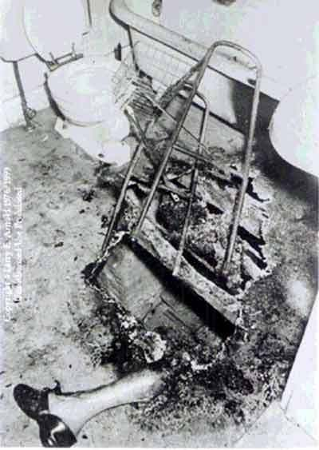

揭开人体自焚成灰之谜
冯冯
近来西方科学界对于“人体自焚”(Spontaneous Human Combustion) 越来越感到有兴趣，也越来越感到迷惑，人体怎会自动焚化呢？
美国最出名的一宗“人体自焚案”，莫过于宾沙凡尼亚州中部小镇高德斯港 (Coudersport)的宾特利医生自焚案。
高斯奈慌忙报案，经过警方及法医检查，又经专家化验，发现宾特利医生的骨灰已烧成细微灰烬。根据专家分析，要把人体烧成细灰，至少需要华氏二千三百度的高温，才可把骨骼烧成飞灰，而且至少需烧九十分钟之久。
一九六六年隆冬，十二月五日晨，煤气查表员兼救火员高斯奈拍门不应，情知有异，从地下室进入屋内，发现九十二岁高龄的宾特利医生已在地下室化成一堆灰烬，只余下一只半截的小腿和脚上穿的胶制皮鞋，室内弥漫异香。
如果宾医生曾经被人谋害焚烧，就算用氢氧化管他，也最多只有三四百度温度，不可能达到两三千度高温，也不可能把骨头也烧成一堆飞灰。
假若宾医生是被两三千度高温烧化，为何他的一只半截小腿和胶鞋未被烧熔？房子也未烧毁。
专家说，一般房子火灾，焚烧的温度很少高于华氏一千五百度。
而宾医生的骨灰旁边的一只助行铝架亦并未被火烧熔。三尺以外的板墙上的油漆亦未被高温烘熔起泡，但地面烧成矽化。
宾医生自焚成灰案，轰动一时，至今仍是一件未获满意解释的神秘事件，每年有无数游客前往该地凭吊宾医生的墓碑。
宾医生在该地行医一生，素为当地人士敬仰，他终生独身，晚年练习佛家瑜伽，此均众所周知。
医生骨灰所在之地下室，异香满室，证人说那并非烧焦骨肉的焦臭，而是一种无法形容的从未知悉的异香，终久不散。
这种人体自焚成灰的奇异事件，西方医学史上称为(Spontaneous Human Combustion) 简称为“SHC”， 人体由体内自动喷出火焰把身体烧成飞灰，但是丝毫不损害周围的物件。
一六七三年，巴黎发生一宗“人体自焚成灰案件”，自焚者只剩下一只手指骨留供辨认。
一七四四年四月九日，英国叶普斯维茨 (Ipswich) 村有一个六十岁的派特太大 (Mrs. G. Pett) 自身引发火焰，烧成飞灰。
一九五七年五月十八日，美国费城西医的六十八岁老妇安妮玛田 (Anne Martin) 在房内体发火焰烧成飞灰，警方与法医检验，发现房内之火炉并未点燃过，距她骨灰仅二十四英寸的一叠报纸也未着火，她的鞋子也未烧毁。
一九五一年七月一日在美国佛罗里达州彼得斯堡市，有一位李瑟太太 (Mrs. Mary Hardy Reeser)她的公寓卧室内自焚成灰。
彼得斯堡市警长雷察特 (J. Reichert) 说：我从事警务二十五年，从未见过此种异事！
李瑟太太全身烧成灰烬，只余头颅骨，但亦缩小至只有高尔夫球大小，房内及她周围什物均无被烧。
法医郭乐门 (Dr. Wilton Krogman) 说：尸身显然被华氏三千度起码的火焰所烧化，骨头俱已烧成飞灰，但是尸体周围物件与房间均无被高温烧灼的痕迹，公寓亦无着火，亦无邻人嗅到烧焦骨肉的臭味，亦无烟雾。
警方认为唯一的解释就是李瑟太太身上衣服着火而遭焚死。
衣服着火会引起烧到连骨头化灰吗？这种解释显然是不能令人满意的。
关于人体自焚成灰的研究，西方从十五世纪开始已经有断断续续的零碎纪录。四百多年来，西方的这些纪录，计达两百多件可信的自焚化灰，年龄最少的才四个月，最老的一百一十四岁，男女老幼俱有，肥胖瘦弱各别。
有些自命很科学的人说：人体自焚成灰是由于人体内积聚了太多酒精，酒精自燃，引起人体自焚。
我们如果信从此说，那么，所有的自焚成灰的人，必定全都是“酒鬼”才行了，难道那四个月大的婴儿也是酒鬼吗？百龄老人也是酒鬼吗？宾特利医生生平从不饮酒，何来全身酒精？
而且，酒精一桶一百加仑爆炸焚烧的温度也到达不了一千度呀！那些汽车爆炸，汽油焚烧的惨案许多件之中，温度虽高也从未把罹难者烧成飞灰呀！早几年美国德萨斯州休士顿汽油库大爆炸，罹难者烧成焦炭一团，但也还未成为飞灰呀！就算人是酒徒，灌满了一身酒精，重达两百磅的躯体内，算它藏有一百磅酒精吧，怎足以焚烧到三千度高热？
又有些人说，是由于人体内积聚太多的脂肪和磷质引起自焚成灰。
依此说，那么每一个大胖子都该会自己自焚成灰了，脂肪更多的动物，例如海狗海象和常见的肥猪，也该都自己自焚成灰了。
又有些人说：是人在床上抽烟引起自焚。
美国加拿大每年不知有几百宗在床上吸烟引起火灾的惨案，只听说连房子烧掉的，只听说有人惨遭烧死，却没听说过烧成飞灰。
人体自焚成灰，高温火焰从不烧及外面杂物，这一点又怎样解释呢？
直到现在，科学界和医学界仍未找出自焚成灰的答案
我认为其实答案并不困难，我认为人体自焚成灰，所需的三千度以上高热，是由于人体内各种元素的核子连锁爆炸所发生。只有核爆才会造成那么高的温度！普通的物质焚烧，是“化学反应”，不是“核子反应”，所产生的温度是很难高达一千度的，尤其是以人体有限的微量化学成份，更无可能以“化学反应”焚烧而产生高达数千度的高热，但只有“核子反应”，纵是微量，也可产生高热。
人体自焚成灰的情形，各人不同，就佛家的自焚成灰实例而论，多半是身体自发无色有光火焰，瞬息之间，全身已成灰烬。
佛家不少有道僧伽或居士，事先预知时辰将至，于是趺坐念佛，心中持念不乱。突然全身白光闪现，数寸强光罩住全身，一闪即消逝，全身成灰，但是面目笑容栩栩如生，身形未变，此时异香满室，似兰似檀。在数分钟之后，人体才倒下，已全是细微飞灰，骨骼亦成飞灰，灰中有舍利子，数目多寡，各人不同。
我们都知道，天然金刚钻石是炭元素受到数千度以上的地心高热与压力所形成。佛家的舍利子形成，有一点与钻石相似──佛家有道行的僧伽与居士，其心力一念“生西”，进入了宇宙永恒，成为永恒的“识” (智慧) 的一份子，不生不灭，即是所谓成佛，但是他留下其意识的一点滴，促成肉体内的各种元素在自发的“三昧真火”高热中化为舍利子，留供世人作为学佛成佛的见证，他自发的三昧真火热达三四千度，他的心力施予压力，等于是地心的数千度高温和压力，于是形成了坚硬可比金刚钻的舍利子，不同的是，舍利子有生命，能来去自如，能增能减，因为它是有道行的人的心力寄存的一部份。
佛家的自发三昧真火，乃是佛家修行人的心力练到可以随心所欲射出辐射能，发出心波──一种超微波的光束，击撞人体全身细胞内的各种元素中的核子，因而引起千千万万粒元素核子的核爆，在瞬息之间，产生高热至数千度，乃至于高度，于是在数秒钟之内，白光一闪，全身化灰，骨骼也化灰。
这是我神识所见的奇妙景象。
佛家心力所发三味真火，是核爆的连锁反应超高温度，火焰不盛似“凡火” (化学反应) ，而且随心控制，故此三昧真火自焚成灰之时，只焚自身，不焚身外各物及房舍。
西方医学有案的人体自焚实例，有些是饮酒者，故此引起人误为是“酒精过多”自燃，到底该人是否真正酒鬼“醉猫”？人们却不曾去研究过其生平，也不曾去查清楚，此人是否暗中学习瑜伽修行功夫而借酒掩饰不使外人得知？至于那四个月的婴儿，竟会自焚化灰，这乃是他前生修为，今生误投胎，故此他以未昧的前生功力发出火焰自焚成灰，那些自焚化灰的妇人，或系前生修为，心力未昧，或系今生秘修佛家苦行，外人怎得知呢？
这世上时常有人能忆起前生数世至数十世的往事，有人一生下来就能讲出前生是佛僧，有些人一生下来就能讲出前生多世的事迹，历历可考证，也有些神童，能背诵前生熟记的佛经书籍，有些神童，生来有超自然的心力移物能力。真是天天都有前生佛，前生学佛人再世再来，西方科学家，只从今生片段的“皮相”去判断，怎能找到神秘事件的真正答案呢？
佛教经论中，不乏对于超自然现象的解释，全都符合宇宙科学法则，可惜一般人未予深研，就是疑而不信，甚至妄指为“迷信”，那也就等于是小学生指爱因斯基坦的“相对论”为“不通”了。
不谈我神识所见所知的佛教古今大德的三昧真火自焚成灰，就是佛教经论之中也有很多这一类记载，俯摭即可得。
大智度论卷三，释初品中共摩诃比丘僧：
世尊将入灭度，须跋陀到拘夷那树林求阿难引见世尊。阿难答言：世尊身极，汝若难问，劳扰世尊，须跋陀如是重请至三，阿难答如初。
佛遥闻之，敕语阿难：“听须跋陀梵志来前，自在难问，是吾末后共谈，最后得道弟子。”
须跋陀前见佛陀问道，佛陀以偈答之曰：“我始年十九，出家学佛道，我出家以来，已过五十岁，净戒禅智慧，外道无一分，少分尚无有，何况一切智？”又曰：“若无八正道，是中无第一果，第二，第三，第四果。若有八正道，是中有第一果，第二，第三，第四果。余外道法皆空，无道，无果，无沙门，无婆罗门，如是我大众中，实作狮子吼。”
须跋陀梵志闻是法而得阿罗汉道，思惟言：“我不应佛后般涅槃！”如是思惟竟，在佛前结跏趺坐，自以神力，身中出火，烧身而取灭度！
大智度论是龙树菩萨所写记述世尊及各徒事迹与论述，句句翔实，龙树菩萨此部谠论，写于一千八百多年前，他对于现今所谓“人体自焚成灰”的事，已有此一实例举述了，其他佛典尚有更多此类记载，真是不胜枚举呢，如果要我写一部专题研究的论文，恐怕得把经藏都逐一翻开抄录，几十万字也写不完哪！
有人仍怀疑心力引发体内元素核爆为不可能，我不妨用一个极浅白的实例来作补充说明，虽然有些不伦不类，不过我相信是较能方便使人初步明了所谓“自焚成灰”的。
这个显浅的实例就是：微波烤箱 (Microwave oven)。
现在美国已很流行微波烤箱，家庭主妇不必开火炉，只消把食物放到小小的微波烤箱内，开了自动开关，它就会把食物烤熟了，烤时不见火光，也不见高热，数分钟之内，就把肉类或全鸡烤熟，不见烤焦，又不见箱内有高热。
微波烤箱的原理，就是用微波照射入肉类内部，引发肉类内各种元素电子之间的静电作用，使之自动改变排列。换言之，是运用肉类食物本身的元素电子潜能，在短短数分钟之内自己焚烧，不假于外来的热能，就使自己烤熟了。这种烤烧，无烟无臭，不见火光，没有可感之温度。
人与畜的肉身都是同一来源来的，构造大同小异。(从胚胎形态就可看出，人，猪，鸡，免，狗，猫……没有太大异样，胚胎发展过程就是生命进化的缩影)。 佛教戒杀生，佛教视众生为一体，慈悲为怀，正是因为看透了人畜同源本是兄弟。
我拿微波烤箱做例子，讲及烤肉，真是罪过，但是我相信此例可助怀疑者较易接受我上面所述的心力引发体内元素核爆三昧真火。
现阶段的实用科学已能制造微波来烤熟食物。佛家的心力比它高上不知多少倍，佛家用心力的超微波引发体内元素核爆产生三四千度的三昧真火，把肉体在一闪之间化为飞灰，又使各元素的原子重新组合，形成坚比金刚钻的舍利子，留作护法见证，这应是不难了解可接受的事实！
世尊在拘夷那树林入灭之后，祂等到迦叶来到，衪才自己发出三昧真火荼昆成灰，留下无数舍利子以坚后世世人信佛之心。祂不是由薪木举火焚化的，虽然当时各徒也依照印度风俗堆集薪木举火，但是，凡火并不能烧到几千度高热来使骨骼成灰。真正火化的力量是世尊自己的“三昧真火”──祂心力引发的核爆高温。
佛教僧伽荼昆火化时，也是一样，凡火只是仪式，凡火只可烧化皮肉，不能使骨头化灰，真正使骨头成灰又形成舍利子的力量，乃是修行人自己的心力与三昧真火。
附录：
History of Spontaneous Human Combustion
http://www.crystalinks.com/shc.html
On April 9, 1744, Grace Pett, 60, an alcoholic residing in Ipswich England, was found on the floor by her daughter like "a log of wood consumed by a fire, without apparent flame." Nearby clothing was undamaged.
In 1951 the Mary Reeser case recaptured the public interest in Spontaneous Human Combustion. Mrs. Reeser, 67, was found in her apartment on the morning of July 2, 1951, reduced to a pile of ashes, a skull, and a completely undamaged left foot. This event has become the foundation for many a book on the subject of SHC since, the most notable being Michael Harrison's Fire From Heaven, printed in 1976. Fire From Heaven has become the standard reference work on Spontaneous Human Combustion.
On May 18, 1957, Anna Martin, 68, of West Philadelphia, Pennsylvania, was found incinerated, leaving only her shoes and a portion of her torso. The medical examiner estimated that temperatures must have reached 1,700 to 2,000 degrees, yet newspapers two feet away were found intact.
On December 5, 1966, the ashes of Dr. J. Irving Bentley, 92, of Coudersport, Pennsylvania, were discovered by a meter reader. Dr. Bentley's body apparently ignited while he was in the bathroom and burned a 2-1/2-by-3-foot hole through the flooring, with only a portion of one leg remaining intact. Nearby paint was unscorched.
原载万佛城《金刚菩提海》第146期：1982年07月1日
原载万佛城《金刚菩提海》第147期：1982年08月1日
转贴来源：万佛城《金刚菩提海》